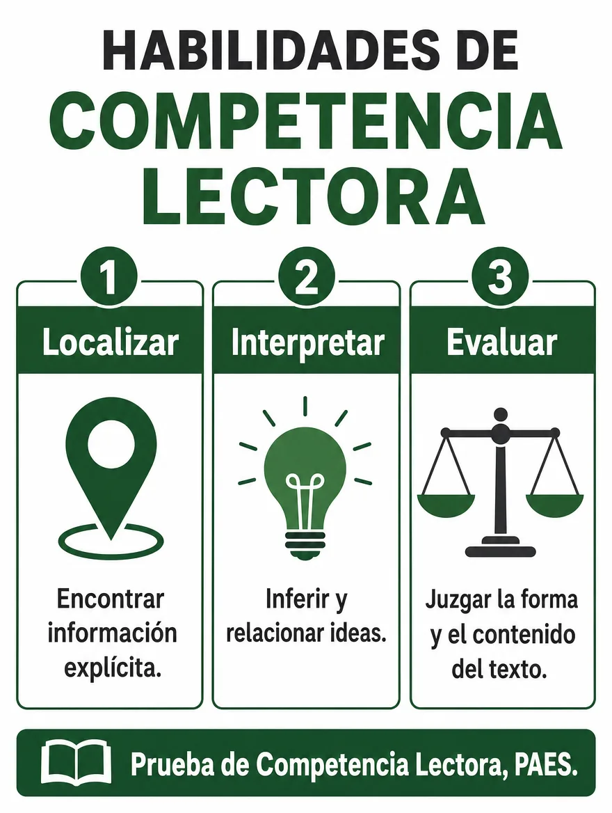

Competencia Lectora · 3.º HC
Repaso 1 · Leer para comprender
Diez contenidos para leer mejor: del tema del texto al resumen
12 de noviembre de 2026 · 10 contenidos · 44 preguntas
Antes de practicar · Clase con el docente
Aprende la estrategia
Repasar un contenido y aplicarlo en una lectura
Objetivo de la clase
Repasar diez contenidos de comprensión lectora (tema e ideas, propósito comunicativo, inferencias, vocabulario en contexto, propósitos explícitos e implícitos, hechos y opiniones, conectores, secuencias textuales, afijos y resumen) y aplicarlos en lecturas breves.
¿Cómo comprobaré mi avance? Podré decir qué contenido usé en cada respuesta y mostrar la parte del texto que la apoya.
Instrucciones de trabajo · Antes de comenzar
Necesitas esta guía y tu cuaderno. Abre los cuatro bloques de esta pantalla en orden. Trabaja el ejemplo con el docente; después intenta la comprobación antes de desplegar su respuesta.
Luego ingresa con tu RUT. La guía tiene diez partes: en cada una primero repasas el contenido con su infografía y después lo aplicas en una lectura con cuatro o cinco preguntas. Tiempo sugerido: 90 minutos. En las preguntas 2, 7, 12, 17, 23, 28, 30, 36, 38 y 42 escribe también una respuesta breve.
Las consignas de este repaso inicial se responden en tu cuaderno: no tienen puntaje ni se guardan en línea. Las respuestas de la guía se guardan solas. Al entregar, espera la confirmación de la plataforma; los resultados dependen de la publicación del docente.
Activa lo que sabes
Piensa en la última lectura que hiciste en clases. Si alguien te preguntara «¿de qué trataba?» y «¿para qué fue escrita?», ¿qué responderías? Esas dos preguntas son el punto de partida de hoy.
- 1 · Comprende
- 2 · Aplica
- 3 · Observa
- 4 · Comprueba
1. Comprende los conceptos
Tres habilidades de la prueba

Localizar es encontrar información explícita. Interpretar es inferir y relacionar ideas. Evaluar es juzgar la forma y el contenido del texto. Los contenidos de hoy te sirven para las tres.
Tema e ideas
El tema es de qué trata el texto, en una frase breve. La idea principal es lo esencial de un párrafo; las ideas secundarias la explican, la ejemplifican o la amplían.
Propósito comunicativo
Es la intención del texto: informar, persuadir, expresar o entretener. Se reconoce mirando qué busca provocar en quien lee.
Inferencia
Es lo que concluyes al unir una pista del texto con lo que tú sabes. Es local cuando sale de una parte y global cuando considera todo el texto.
Vocabulario en contexto
Una palabra puede cambiar de sentido según el texto. Las palabras vecinas dan la pista; para comprobar, reemplázala por un sinónimo y revisa si la oración mantiene el sentido.
Propósito explícito e implícito
Es explícito cuando el emisor declara lo que busca. Es implícito cuando la intención se infiere a partir de pistas del texto.
Hecho y opinión
Un hecho se puede comprobar. Una opinión es un juicio personal y discutible; suele delatarse por palabras valorativas como «mejor» o «injusto».
Conectores
Son las palabras que unen las ideas y muestran su relación: adición, contraste, causa, consecuencia o conclusión.
Secuencias textuales
Son las formas en que se organiza un texto: narrar, describir, exponer, argumentar o dialogar. Un texto suele combinar varias.
Afijos
Los prefijos van antes de la raíz y los sufijos, después. Descomponer una palabra en sus partes ayuda a deducir qué significa.
Resumir
Identifica las ideas principales, elimina ejemplos y detalles, y redacta con tus palabras. Un buen resumen es fiel, breve y claro.
2. Aplica la estrategia paso a paso
- Repasa el contenido
Mira la infografía de la parte y lee «Lo esencial». Di con tus palabras qué significa cada concepto.
- Lee el texto completo
Antes de mirar las preguntas, pregúntate de qué trata y para qué fue escrito.
- Reconoce qué pide la pregunta
¿Pregunta por el tema, por una idea, por la intención, por algo que no está dicho, por el sentido de una palabra, por la relación entre dos ideas o por la forma en que está organizado el texto?
- Vuelve al texto y decide
Ubica la parte que responde y compara las alternativas con ella. Descarta las que cambian un dato o afirman algo que el texto no sostiene.
Antes del modelo: explica con tus palabras la diferencia entre el tema de un texto y su propósito.
3. Sigue un ejemplo razonado
Ejemplo de enseñanza, no evaluado
«Cada año se pierden toneladas de fruta porque no cumple con el tamaño o la forma que exige el comercio. Sin embargo, esa fruta tiene el mismo sabor y los mismos nutrientes. La próxima vez que compres, elige también la manzana imperfecta».
Pregunta del modelo
¿Cuál es el tema y cuál es el propósito de este texto?
Pienso en voz alta
El asunto que se repite es la fruta que se pierde por su aspecto: ese es el tema. Las dos primeras oraciones entregan información, pero la última me pide hacer algo: «elige también la manzana imperfecta». Esa petición muestra la intención.
Conclusión justificada
Tema: la fruta que se desperdicia por su aspecto. Propósito: persuadir, porque el texto termina pidiendo una acción a quien lee. Descarto «informar» como propósito principal: los datos están puestos para convencer.
4. Comprueba y prepara la práctica
Ahora explica tú · En tu cuaderno
En el mismo texto de la fruta, identifica la idea principal y una idea secundaria. Anota cuál es cuál y por qué.
Revisa después de responder
Idea principal: se pierde fruta en buen estado solo por su aspecto. Idea secundaria: «tiene el mismo sabor y los mismos nutrientes», porque explica por qué esa pérdida no se justifica. Si elegiste la última oración, revisa: esa oración muestra el propósito, no la idea principal.
Comprueba antes de avanzar
¿Puedes decir el tema en una frase breve? ¿Puedes señalar la oración que te mostró el propósito? Si falta alguno, vuelve al bloque 1 de esta pantalla.
Aplica y transfiere
En la práctica, antes de responder cada pregunta, di qué contenido pide: tema, idea, propósito, inferencia, vocabulario, hecho u opinión, conector, secuencia, afijo o resumen. Lo usarás en el cierre de la guía.
Guía 27 · 12 de noviembre
Repaso 1 · Leer para comprender
10 contenidos · 44 preguntas · Tiempo sugerido: 90 minutos · En cada parte, primero repasa la infografía y después aplica el contenido en la lectura
Revisión y entrega
Puedes entregar con preguntas pendientes.
Entrega confirmada
Tus respuestas quedaron registradas. Los resultados estarán disponibles cuando el profesor los publique.
Volver al portal PAES